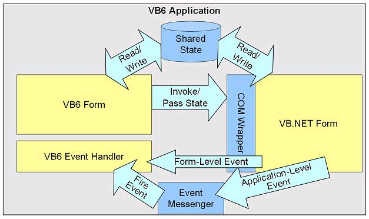
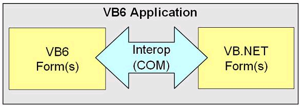

Overview
The Microsoft Interop Forms Toolkit is aimed at simplifying the use of Visual Basic.NET Windows Forms within a Visual Basic 6.0 forms application. The toolkit is targeted specifically at providing tools and guidance for performing a phased migration of a Visual Basic 6.0 forms-based application to Visual Basic .NET. The goal of a phased migration is a production release at the end of each phase that has both Visual Basic 6.0 and .NET forms running in the same Visual Basic 6.0 .exe process.

What’s New in ver 2.1
What’s New in ver 2.0
The tools and components that make up the Interop Forms Toolkit simplify the pThe tools and components that make up the Interop Forms Toolkit simplify the process of building forms with Visual Basic .NET that can be easily consumed from Visual Basic 6.0 by automating the creation of the required COM interop components. The Toolkit makes it easy to expose methods, properties, and events to Visual Basic 6.0 from a .NET form. In addition, functionality is provided to share application state and signal application-level events.

The Toolkit guides you down a migration path that allows you to focus on writing code that adds business value instead of infrastructure and interop code.Basic.NET code library that provides functionality you add to your .NET Forms to make them easy to expose to Visual Basic 6.0. This assembly, Microsoft.InteropFormTools, defines several attributes you use with your custom .NET Forms. These attributes work in conjunction with a new Visual Studio AddIn that is also installed with the Toolkit. InteropForms and Interop UserControls each have a project template and an item template that you can access under the New Project dialog in Visual Studio.
In addition to these tools, new items have been added to the Start Menu. They include a shortcut to the Help documentation and shortcuts to three sample applications that demonstrate creating Visual Basic.NET Forms for a Visual Basic 6.0 application by using this Toolkit. The Hello World Hybrid Application sample application shows how to use some of the basic features of the Interop Forms Toolkit. The Line Of Business Hybrid Application provides a complete example of how you may structure an application that uses both Visual Basic .NET and Visual Basic 6.0. The Word Processor UserControl Application demonstrates how to use an Interop UserControl in a VisualBasic 6.0 application.
Requirements
This Toolkit requires Visual Basic 6.0 and a full version of Visual Studio 2005 or later (Note: Visual Studio AddIns are not supported in Visual Basic Express).